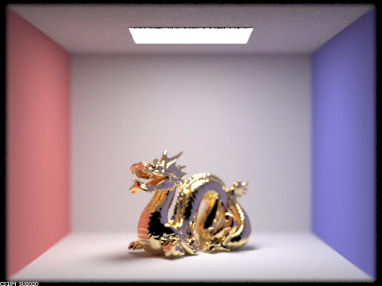

Project Overview
This project is a continuation of the pathtracer implemented in 3-1. In this project, I decided to implement reflection and refraction functions in order to model advanced materials suck as mirrors, metals, and glass (part 1). I also decided to implement depth of field by switching from the pinhole camera model to the thin-lens camera model (part 4). I found this project very interesting because we work with models that closely depict the behavior of light in the real world. After completing part 1, many objects became extremely realistic in appearance such as the light refracting in a glass ball. After completing part 4, the image became realistic by simulating how our eyes and our cameras view the world. Both parts of this project enhanced the immersion that we can achieve through pictures.
Part 1: Mirror and Glass Materials
In the first part of this project, we implemented reflection and refraction functions so that we can model more advanced types of materials. Particularly, these reflection and refraction functions are necessary for simulation of shiny and transparent objects.
Reflection
In the reflection function of our BSDF, we are given a vector representing the ray of light reflecting off of a surface and we want to compute the vector representing the mirroring solid angle that the ray hits the surface at. This angle is important because we can use it to recursively compute the light coming from that direction (from the next object). This is the perfect specular reflection equation used in my implementation:
wi = -wo + 2 * dot(wo, norm) * norm
What you will notice is that we can swap wi and wo, as the lecture slide computes wo from wi instead. This is because theta(i) is equal to theta(o). In other words, they have the same angle from the normal vector.
Refraction
In the refraction function of our BSDF, we use Snell's law to compute the refraction direction of a given vector. This takes into account the index of refraction of the two mediums to compute the entering/exiting angle.
eta_i*sin(theta_i) = eta_t*sin(theta_t)
From the Snell's law, we can derive the x, y, and z of the wi vector using functions in the spec that transform wo. We also needed to test for total internal reflection where the ray does not exit the medium and just gets reflected back into the same object when hitting the surface. If such total internal reflection exists, we return false indicating that there is no wi vector.
Sampling
After implementation of these two BSDF functions as well as the respective sampling functions for mirror, refractive, and glass materials, we can achieve super realistic renders! The respective sampling functions for mirror and refractive material BSDFs sample from our new functions with probability 1.0 since we have certainty through computation of what wi should be. We also multiply by reflectance or transmittance and divide by abs_cos_theta(wi) to negate the lambertian falloff. For glass materials, there is both reflection and refraction so we simply estimate the ratio of reflection to refraction by coin flipping with probably R = Schlick's reflection coefficient. The edge case for glass is when there is total internal reflection, then we only reflect.
All of the following images were rendered at 480x360 resolution, 1024 samples per pixel and 8 samples per light.
Using our new functions and BSDFs, here is a showcase of it in action. We rendered 7 images with increasing maximum ray depths to show how multiple bounces of light works in this scene with our new materials. Note that at a maximum ray depth of 2, we begin to see the mirror ball with specular reflections of its surroundings. At a maximum ray depth of 3, the glass ball is no longer black and shows refractions of the room around it as well as even caustics below it.
At maximum ray depth of 0 we can only see objects that we directly intersect with each ray from their emitted light. In other words, only light sources will appear in the scene. At maximum ray depth of 1, we have direct lighting so walls and objects can trace rays directly from a light source. At this ray depth, the mirror and glass ball still appear to be black because they cannot sample from their surroundings. However, we can see shadows and specular reflections of the direct light. At maximum ray depth of 2, we begin to have indirect lighting. This is when the mirror ball can trace the radiance coming from the surrounding objects which in turn trace to the light source. At maximum ray depths of 3 and above, we finally see refractions in the glass ball as well as some caustics. This is because we can now trace through the ball which in turn traces to its surroundings which in turn traces to the light source. From maximum ray depths of 4 and beyond, we can see more caustics and the glass ball becomes brighter as more rays of light become refracted through it. Notice that we now have a caustic from the ball casted onto the right wall. This is likely a result of the mirror ball reflecting a lot of light from the light source into the glass ball, refracting through the glass ball, hitting the wall, and reaching our eye. There is also a subtle difference between depths 3 and 4 in the reflection of the glass ball on the mirror ball. Notice that the reflection of the glass ball at depth 3 is black. This is because we do not have enough bounces yet to model refraction AND mirroring. For a properly mirrored glass ball, we need at least depth 4.
|
|

|

|

|

|
|

|
Part 4: Depth of Field
For my second part of this project, I decided to complete Part 4 (Depth of Field). The depth of field is essentially the range of depth where objects appear clear in an image. Depth of field largely depends on the size of the circle of confusion which in turn depends on aperture (focal length / lens size). The bigger the lens or the shorter the focal length, the shallower the depth of field because light converges at a steeper angle thus diverging at the same steep angle. Our circle of confusion would grow beyond the permissible size fairly quickly. This brings up an important difference between a pinhole camera model and a thin-lens camera model. A pinhole camera model is essentially the equivalent of an infinitely small lens, meaning that we have an infinite depth of field. If we have an infinite depth of field, then the entire scene will always be in focus. The thin-lens camera model is a better approximation for how cameras and our eyes work in the real world, as light rays from a point in the scene that do not converge near the sensor will cause the object to appear blurry and the amount of bluriness depends on factors such as distance, focal length, and lens size. By moving the lens or the sensor, we can shift which objects are in focus by shifting the focal plane. The aperture and focal length of a lens also affects its exposure, which the pinhole camera model cannot simulate as realistically because there is no aperture.
Implementation
The basic principle is based on the Gaussian Thin Lens Equation, which tells us that light coming from an object passing through any point in the lens will converge to the same point on an image plane. This means that instead of only sampling through the middle of the lens (simulating a pinhole model), we can sample at any point on the lens since rays of light from one point on one side will all converge to another point on the other side. We can compute where the rays converge on the other side because we are given a focal distance and can test for intersection with the plane at z=-focalDistance using our original ray from the pinhole model. Computing the convergence point allows us to obtain the direction to that point from any point on our lens by vector subtraction. Then it is simply a matter of normalizing and transforming to world space and creating the ray respective to our camera's location.
Showcase
Focus stack of a scene with a gold dragon with a shallow depth of field (b=1.23) and four different depths in focus.
|
|
|
|
|
|
A scene with a gold dragon with a fixed focal distance at the head and varying lens radii.
|

|
|
|
|
|